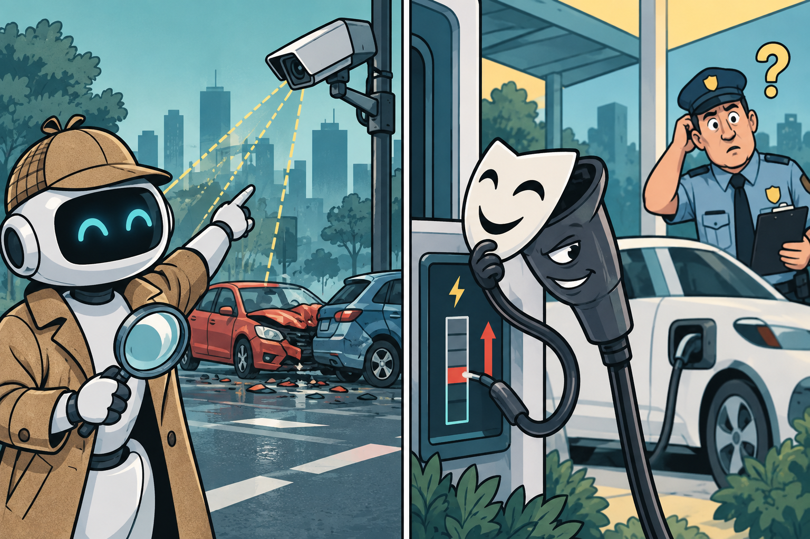

Imagine a traffic camera catching two headlights converging in the rain. A human operator can replay the clip until the collision becomes obvious. A machine has a harder assignment: locate the moment of impact, identify the vehicles, place the collision in the frame and classify what happened—without having been trained on labelled examples from that camera.
That is the problem behind Zero-Shot Traffic Accident Detection via a Coarse-to-Fine VLM-Tracking Pipeline, submitted on 9 August. The clever part is not asking a vision-language model to stare harder. It is changing the order of attention. A sparse first pass searches the whole clip for the likely moment; a second pass zooms into a tight window, now decorated with stable vehicle identities and normalized coordinates. The model receives both the picture and a numerical sketch of the same event.
This is a useful lesson for transportation AI: expensive intelligence is often wasted when the system is shown the wrong slice of reality. The pipeline's frozen Qwen3-VL-32B model is paired with conventional detection and tracking. The language model does not replace the toolbox; the toolbox creates a better question.
Then the innocent driver changes the plan
Two days later, another paper moved from roads to plugs. An EV owner tells a charger she will leave at 8 a.m., then changes her departure to 7. An attacker can manipulate the same fields. If a detector equates “changed request” with “attack,” ordinary flexibility becomes suspicious.
Benchmarking Cyberattack Detection in Electric Vehicle Charging Infrastructure with Benign User Updates, submitted 11 August, deliberately models legitimate revisions as normal behaviour. Its leakage-controlled benchmark preserves complete charging sessions, keeps attacks with their source sessions during splitting, tests six physically motivated attack families and compares 22 model families. A dual-branch detector asks two separate questions: does the current request look normal, and does the transition that produced it resemble a benign update?

One week, one shared warning
The accident paper is explicitly vision-language research. The charging study is not an LLM paper—and that is precisely why it earns a place in this edition. It supplies the kind of evaluation discipline that LLM-based agents will need before they are allowed to supervise charging networks: source-grouped splits, an untouched calibration set, explicit acceptance constraints and a final test performed once.
The evidence remains bounded. A benchmark score is not proof that a city can automate incident response; weather, camera placement and uncommon collisions can still shift performance. Likewise, synthetic attacks in recorded ACN sessions do not reproduce an adversary adapting against a deployed detector. But both papers move the field away from a lazy definition of intelligence: “the model noticed something strange.”
What this changes for LLM4TR
The accident pipeline is an Information Processor wrapped in deterministic tracking. The charging benchmark is a template for evaluating future Decision Facilitators. Together they argue for context-preserving evaluation: keep the sequence, the identity and the benign alternative visible. Otherwise a persuasive model can turn incomplete observation into confident accusation.
Beyond the papers: the week autonomy moved into public space
The research landed during a week when autonomous mobility was also becoming more visible outside the laboratory. On 11 August, Hong Kong's Transport Department approved a four-vehicle autonomous trial linking West Kowloon Station with Kowloon Station. The route is short, but the setting is not trivial: high passenger flows, complex traffic and a direct connection between two major rail services. Backup operators remain inside the vehicles, making the trial a useful reminder that public deployment is still being built around layered supervision rather than model confidence alone.
Two days later, Waymo's own update stream showed the other side of the story: commercial autonomy was expanding its footprint. The company widened service areas in Phoenix and Orlando and continued opening access in U.S. cities. That contrast is instructive. One part of the industry is scaling rider access; another is still carefully licensing limited trials. The common challenge is evidence—how much operational confidence is enough before a system earns a larger role?
Put beside this week's crash-detection and charging-security studies, the public news sharpens the theme. Transportation AI is no longer only about whether a model can recognize or predict. It is about how observation becomes action, who checks the transition, and how mistakes are contained before they become operational decisions.
Sources & reading trail
- Zero-Shot Traffic Accident Detection — 9 Aug 2026
- EV Charging Cyberattack Benchmark — 11 Aug 2026
- Hong Kong Government — Autonomous vehicles trial approved (11 Aug 2026)
- Waymo Updates — service-area and rider-access announcements (13 Aug 2026)
Reading note: Claims and figures are drawn from the cited studies and presented with their stated limits. Preprints, simulations and benchmarks should not be read as field validation unless the source itself reports field evidence.